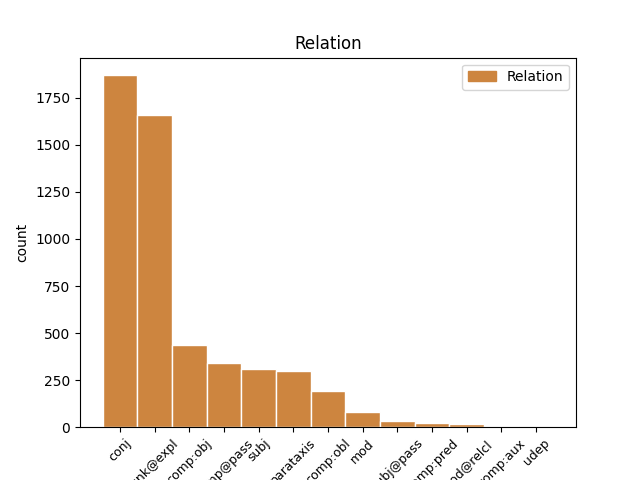
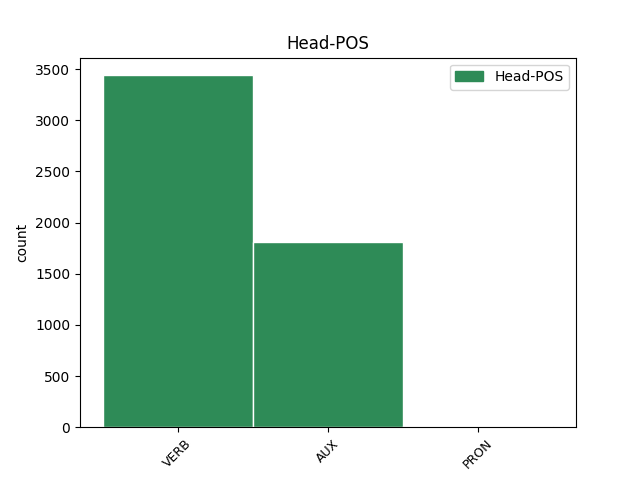
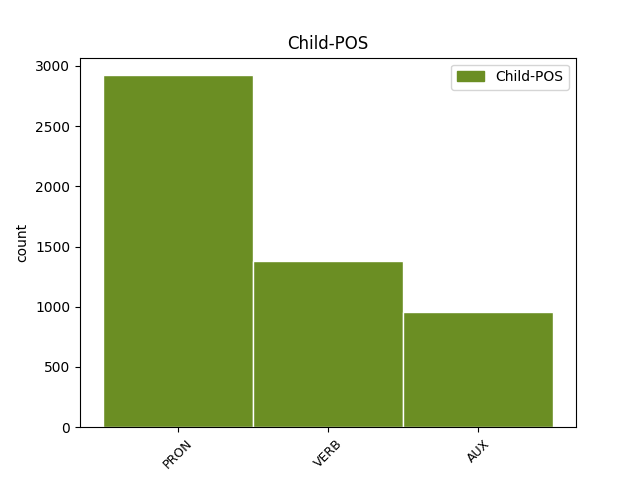

Distribution of features within this leaf



Agreement Rules sorted by frequency.
- When the dependent token is the conjunct(conj) of the head token,
1 Durante _ _ _ _ 0 _ _ _
2 il _ _ _ _ 0 _ _ _
3 terremoto _ _ _ _ 0 _ _ _
4 in _ _ _ _ 0 _ _ _
5 Iran _ _ _ _ 0 _ _ _
6 , _ _ _ _ 0 _ _ _
7 sono essere AUX VA Mood=Ind|Number=Plur|Person=3|Tense=Pres|VerbForm=Fin 0 _ _ _
8 morte _ _ _ _ 0 _ _ _
9 moltissime _ _ _ _ 0 _ _ _
10 persone _ _ _ _ 0 _ _ _
11 e _ _ _ _ 0 _ _ _
12 il _ _ _ _ 0 _ _ _
13 centro _ _ _ _ 0 _ _ _
14 storico _ _ _ _ 0 _ _ _
15 di _ _ _ _ 0 _ _ _
16 la _ _ _ _ 0 _ _ _
17 città _ _ _ _ 0 _ _ _
18 di _ _ _ _ 0 _ _ _
19 Bam _ _ _ _ 0 _ _ _
20 è essere AUX VA Mood=Ind|Number=Sing|Person=3|Tense=Pres|VerbForm=Fin 7 conj _ _
21 stato _ _ _ _ 0 _ _ _
22 completamente _ _ _ _ 0 _ _ _
23 distrutto _ _ _ _ 0 _ _ _
24 . _ _ _ _ 0 _ _ _
1 Mohammad _ _ _ _ 0 _ _ _
2 Khatami _ _ _ _ 0 _ _ _
3 , _ _ _ _ 0 _ _ _
4 il _ _ _ _ 0 _ _ _
5 presidente _ _ _ _ 0 _ _ _
6 di _ _ _ _ 0 _ _ _
7 l’ _ _ _ _ 0 _ _ _
8 Iran _ _ _ _ 0 _ _ _
9 , _ _ _ _ 0 _ _ _
10 si si PRON PC Clitic=Yes|Person=3|PronType=Prs 11 unk@expl _ _
11 è essere AUX VA Mood=Ind|Number=Sing|Person=3|Tense=Pres|VerbForm=Fin 0 _ _ _
12 impegnato _ _ _ _ 0 _ _ _
13 a _ _ _ _ 0 _ _ _
14 ricostruire _ _ _ _ 0 _ _ _
15 il _ _ _ _ 0 _ _ _
16 centro _ _ _ _ 0 _ _ _
17 di _ _ _ _ 0 _ _ _
18 la _ _ _ _ 0 _ _ _
19 città _ _ _ _ 0 _ _ _
20 di _ _ _ _ 0 _ _ _
21 Bam _ _ _ _ 0 _ _ _
22 entro _ _ _ _ 0 _ _ _
23 2 _ _ _ _ 0 _ _ _
24 anni _ _ _ _ 0 _ _ _
25 . _ _ _ _ 0 _ _ _
1 Le _ _ _ _ 0 _ _ _
2 gare _ _ _ _ 0 _ _ _
3 che _ _ _ _ 0 _ _ _
4 si si PRON PC Clitic=Yes|Person=3|PronType=Prs 5 comp@pass _ _
5 fanno fare VERB V Mood=Ind|Number=Plur|Person=3|Tense=Pres|VerbForm=Fin 0 _ _ _
6 in _ _ _ _ 0 _ _ _
7 il _ _ _ _ 0 _ _ _
8 mare _ _ _ _ 0 _ _ _
9 o _ _ _ _ 0 _ _ _
10 in _ _ _ _ 0 _ _ _
11 i _ _ _ _ 0 _ _ _
12 laghi _ _ _ _ 0 _ _ _
13 , _ _ _ _ 0 _ _ _
14 sono _ _ _ _ 0 _ _ _
15 molto _ _ _ _ 0 _ _ _
16 lunghe _ _ _ _ 0 _ _ _
17 . _ _ _ _ 0 _ _ _
1 I _ _ _ _ 0 _ _ _
2 Rapid _ _ _ _ 0 _ _ _
3 Eyes _ _ _ _ 0 _ _ _
4 Movements _ _ _ _ 0 _ _ _
5 sono _ _ _ _ 0 _ _ _
6 i _ _ _ _ 0 _ _ _
7 movimenti _ _ _ _ 0 _ _ _
8 che _ _ _ _ 0 _ _ _
9 i _ _ _ _ 0 _ _ _
10 nostri _ _ _ _ 0 _ _ _
11 occhi _ _ _ _ 0 _ _ _
12 fanno _ _ _ _ 0 _ _ _
13 quando _ _ _ _ 0 _ _ _
14 noi noi PRON PE Number=Plur|Person=1|PronType=Prs 15 subj _ _
15 dormiamo dormire VERB V Mood=Ind|Number=Plur|Person=1|Tense=Pres|VerbForm=Fin 0 _ _ _
16 profondamente _ _ _ _ 0 _ _ _
17 e _ _ _ _ 0 _ _ _
18 sogniamo _ _ _ _ 0 _ _ _
19 . _ _ _ _ 0 _ _ _
1 Così _ _ _ _ 0 _ _ _
2 i _ _ _ _ 0 _ _ _
3 piloti _ _ _ _ 0 _ _ _
4 perdono _ _ _ _ 0 _ _ _
5 secondi _ _ _ _ 0 _ _ _
6 importanti _ _ _ _ 0 _ _ _
7 e _ _ _ _ 0 _ _ _
8 le _ _ _ _ 0 _ _ _
9 altre _ _ _ _ 0 _ _ _
10 macchine _ _ _ _ 0 _ _ _
11 li li PRON PC Clitic=Yes|Gender=Masc|Number=Plur|Person=3|PronType=Prs 12 comp:obj _ _
12 superano superare VERB V Mood=Ind|Number=Plur|Person=3|Tense=Pres|VerbForm=Fin 0 _ _ _
13 . _ _ _ _ 0 _ _ _
1 Durante _ _ _ _ 0 _ _ _
2 la _ _ _ _ 0 _ _ _
3 staffetta _ _ _ _ 0 _ _ _
4 , _ _ _ _ 0 _ _ _
5 i _ _ _ _ 0 _ _ _
6 nuotatori _ _ _ _ 0 _ _ _
7 fanno fare VERB V Mood=Ind|Number=Plur|Person=3|Tense=Pres|VerbForm=Fin 0 _ _ _
8 una _ _ _ _ 0 _ _ _
9 squadra _ _ _ _ 0 _ _ _
10 di _ _ _ _ 0 _ _ _
11 4 _ _ _ _ 0 _ _ _
12 persone _ _ _ _ 0 _ _ _
13 : _ _ _ _ 0 _ _ _
14 ogni _ _ _ _ 0 _ _ _
15 nuotatore _ _ _ _ 0 _ _ _
16 nuota nuotare VERB V Mood=Ind|Number=Sing|Person=3|Tense=Pres|VerbForm=Fin 7 parataxis _ _
17 solo _ _ _ _ 0 _ _ _
18 per _ _ _ _ 0 _ _ _
19 una _ _ _ _ 0 _ _ _
20 parte _ _ _ _ 0 _ _ _
21 di _ _ _ _ 0 _ _ _
22 il _ _ _ _ 0 _ _ _
23 percorso _ _ _ _ 0 _ _ _
24 di _ _ _ _ 0 _ _ _
25 gara _ _ _ _ 0 _ _ _
26 . _ _ _ _ 0 _ _ _
1 I _ _ _ _ 0 _ _ _
2 personaggi _ _ _ _ 0 _ _ _
3 di _ _ _ _ 0 _ _ _
4 i _ _ _ _ 0 _ _ _
5 fumetti _ _ _ _ 0 _ _ _
6 usano _ _ _ _ 0 _ _ _
7 la _ _ _ _ 0 _ _ _
8 parola _ _ _ _ 0 _ _ _
9 “ _ _ _ _ 0 _ _ _
10 Ouch _ _ _ _ 0 _ _ _
11 ” _ _ _ _ 0 _ _ _
12 quando _ _ _ _ 0 _ _ _
13 vanno _ _ _ _ 0 _ _ _
14 a _ _ _ _ 0 _ _ _
15 sbattere _ _ _ _ 0 _ _ _
16 contro _ _ _ _ 0 _ _ _
17 qualcosa _ _ _ _ 0 _ _ _
18 e _ _ _ _ 0 _ _ _
19 si si PRON PC Clitic=Yes|Person=3|PronType=Prs 20 comp:obl _ _
20 fanno fare VERB V Mood=Ind|Number=Plur|Person=3|Tense=Pres|VerbForm=Fin 0 _ _ _
21 male _ _ _ _ 0 _ _ _
22 . _ _ _ _ 0 _ _ _
1 Quando _ _ _ _ 0 _ _ _
2 c’ _ _ _ _ 0 _ _ _
3 è essere VERB V Mood=Ind|Number=Sing|Person=3|Tense=Pres|VerbForm=Fin 8 mod _ _
4 il _ _ _ _ 0 _ _ _
5 terremoto _ _ _ _ 0 _ _ _
6 la _ _ _ _ 0 _ _ _
7 terra _ _ _ _ 0 _ _ _
8 trema tremare VERB V Mood=Ind|Number=Sing|Person=3|Tense=Pres|VerbForm=Fin 0 _ _ _
9 e _ _ _ _ 0 _ _ _
10 si _ _ _ _ 0 _ _ _
11 muove _ _ _ _ 0 _ _ _
12 . _ _ _ _ 0 _ _ _
1 Non _ _ _ _ 0 _ _ _
2 molto _ _ _ _ 0 _ _ _
3 tempo _ _ _ _ 0 _ _ _
4 fa _ _ _ _ 0 _ _ _
5 essi esso PRON PE Gender=Masc|Number=Plur|Person=3|PronType=Prs 6 subj@pass _ _
6 erano essere AUX VA Mood=Ind|Number=Plur|Person=3|Tense=Imp|VerbForm=Fin 0 _ _ _
7 visti _ _ _ _ 0 _ _ _
8 come _ _ _ _ 0 _ _ _
9 l' _ _ _ _ 0 _ _ _
10 ancora _ _ _ _ 0 _ _ _
11 di _ _ _ _ 0 _ _ _
12 salvezza _ _ _ _ 0 _ _ _
13 di _ _ _ _ 0 _ _ _
14 l' _ _ _ _ 0 _ _ _
15 economia _ _ _ _ 0 _ _ _
16 mondiale _ _ _ _ 0 _ _ _
17 , _ _ _ _ 0 _ _ _
18 il _ _ _ _ 0 _ _ _
19 motore _ _ _ _ 0 _ _ _
20 di _ _ _ _ 0 _ _ _
21 una _ _ _ _ 0 _ _ _
22 crescita _ _ _ _ 0 _ _ _
23 destinata _ _ _ _ 0 _ _ _
24 ad _ _ _ _ 0 _ _ _
25 affermar _ _ _ _ 0 _ _ _
26 si _ _ _ _ 0 _ _ _
27 mentre _ _ _ _ 0 _ _ _
28 gli _ _ _ _ 0 _ _ _
29 Stati _ _ _ _ 0 _ _ _
30 Uniti _ _ _ _ 0 _ _ _
31 e _ _ _ _ 0 _ _ _
32 l' _ _ _ _ 0 _ _ _
33 Europa _ _ _ _ 0 _ _ _
34 languivano _ _ _ _ 0 _ _ _
35 . _ _ _ _ 0 _ _ _
1 Si _ _ _ _ 0 _ _ _
2 vede _ _ _ _ 0 _ _ _
3 che _ _ _ _ 0 _ _ _
4 è _ _ _ _ 0 _ _ _
5 roba _ _ _ _ 0 _ _ _
6 di _ _ _ _ 0 _ _ _
7 un _ _ _ _ 0 _ _ _
8 servo _ _ _ _ 0 _ _ _
9 di _ _ _ _ 0 _ _ _
10 Dio _ _ _ _ 0 _ _ _
11 , _ _ _ _ 0 _ _ _
12 e _ _ _ _ 0 _ _ _
13 conviene _ _ _ _ 0 _ _ _
14 lavorare _ _ _ _ 0 _ _ _
15 per _ _ _ _ 0 _ _ _
16 lui lui PRON PE Gender=Masc|Number=Sing|Person=3|PronType=Prs 0 _ _ _
17 che _ _ _ _ 0 _ _ _
18 ci _ _ _ _ 0 _ _ _
19 ha avere VERB V Mood=Ind|Number=Sing|Person=3|Tense=Pres|VerbForm=Fin 16 mod@relcl _ _
20 in _ _ _ _ 0 _ _ _
21 mano _ _ _ _ 0 _ _ _
22 la _ _ _ _ 0 _ _ _
23 messa _ _ _ _ 0 _ _ _
24 e _ _ _ _ 0 _ _ _
25 la _ _ _ _ 0 _ _ _
26 benedizione _ _ _ _ 0 _ _ _
27 ! _ _ _ _ 0 _ _ _
1 Questa _ _ _ _ 0 _ _ _
2 è _ _ _ _ 0 _ _ _
3 carne _ _ _ _ 0 _ _ _
4 di _ _ _ _ 0 _ _ _
5 balena _ _ _ _ 0 _ _ _
6 , _ _ _ _ 0 _ _ _
7 che _ _ _ _ 0 _ _ _
8 ho _ _ _ _ 0 _ _ _
9 fotografato _ _ _ _ 0 _ _ _
10 in _ _ _ _ 0 _ _ _
11 un _ _ _ _ 0 _ _ _
12 negozio _ _ _ _ 0 _ _ _
13 di _ _ _ _ 0 _ _ _
14 alimentari _ _ _ _ 0 _ _ _
15 a _ _ _ _ 0 _ _ _
16 Tokyo _ _ _ _ 0 _ _ _
17 - _ _ _ _ 0 _ _ _
18 ma _ _ _ _ 0 _ _ _
19 lo lo PRON PC Clitic=Yes|Gender=Masc|Number=Sing|Person=3|PronType=Prs 20 comp:pred _ _
20 è essere AUX V Mood=Ind|Number=Sing|Person=3|Tense=Pres|VerbForm=Fin 0 _ _ _
21 davvero _ _ _ _ 0 _ _ _
22 ? _ _ _ _ 0 _ _ _
1 Gli _ _ _ _ 0 _ _ _
2 ucraini _ _ _ _ 0 _ _ _
3 hanno _ _ _ _ 0 _ _ _
4 dimostrato _ _ _ _ 0 _ _ _
5 la _ _ _ _ 0 _ _ _
6 loro _ _ _ _ 0 _ _ _
7 devozione _ _ _ _ 0 _ _ _
8 a _ _ _ _ 0 _ _ _
9 l' _ _ _ _ 0 _ _ _
10 Unione _ _ _ _ 0 _ _ _
11 Europea _ _ _ _ 0 _ _ _
12 che _ _ _ _ 0 _ _ _
13 è _ _ _ _ 0 _ _ _
14 essa _ _ _ _ 0 _ _ _
15 stessa _ _ _ _ 0 _ _ _
16 disperatamente _ _ _ _ 0 _ _ _
17 divisa _ _ _ _ 0 _ _ _
18 , _ _ _ _ 0 _ _ _
19 con _ _ _ _ 0 _ _ _
20 una _ _ _ _ 0 _ _ _
21 crisi _ _ _ _ 0 _ _ _
22 di _ _ _ _ 0 _ _ _
23 l' _ _ _ _ 0 _ _ _
24 euro _ _ _ _ 0 _ _ _
25 che _ _ _ _ 0 _ _ _
26 mette mettere VERB V Mood=Ind|Number=Sing|Person=3|Tense=Pres|VerbForm=Fin 0 _ _ _
27 Paesi _ _ _ _ 0 _ _ _
28 creditori _ _ _ _ 0 _ _ _
29 e _ _ _ _ 0 _ _ _
30 debitori _ _ _ _ 0 _ _ _
31 gli _ _ _ _ 0 _ _ _
32 uni uno PRON PE Gender=Masc|Number=Plur|Person=3|PronType=Prs 26 udep _ _
33 contro _ _ _ _ 0 _ _ _
34 gli _ _ _ _ 0 _ _ _
35 altri _ _ _ _ 0 _ _ _
36 . _ _ _ _ 0 _ _ _
1 Da _ _ _ _ 0 _ _ _
2 quale _ _ _ _ 0 _ _ _
3 musical _ _ _ _ 0 _ _ _
4 di _ _ _ _ 0 _ _ _
5 Broadway _ _ _ _ 0 _ _ _
6 è essere AUX VA Mood=Ind|Number=Sing|Person=3|Tense=Pres|VerbForm=Fin 0 _ _ _
7 tratta trattare VERB V Mood=Ind|Number=Sing|Person=3|Tense=Pres|VerbForm=Fin 6 comp:aux _ _
8 la _ _ _ _ 0 _ _ _
9 canzone _ _ _ _ 0 _ _ _
10 " _ _ _ _ 0 _ _ _
11 The _ _ _ _ 0 _ _ _
12 Story _ _ _ _ 0 _ _ _
13 is _ _ _ _ 0 _ _ _
14 me _ _ _ _ 0 _ _ _
15 " _ _ _ _ 0 _ _ _
16 ? _ _ _ _ 0 _ _ _
Disagree Examples:
1 Mi mi PRON PC Clitic=Yes|Number=Sing|Person=1|PronType=Prs 2 comp:obl _ _
2 viene venire VERB V Mood=Ind|Number=Sing|Person=3|Tense=Pres|VerbForm=Fin 0 _ _ _
3 in _ _ _ _ 0 _ _ _
4 mente _ _ _ _ 0 _ _ _
5 una _ _ _ _ 0 _ _ _
6 mia _ _ _ _ 0 _ _ _
7 vecchia _ _ _ _ 0 _ _ _
8 cameriera _ _ _ _ 0 _ _ _
9 che _ _ _ _ 0 _ _ _
10 , _ _ _ _ 0 _ _ _
11 guardando _ _ _ _ 0 _ _ _
12 i _ _ _ _ 0 _ _ _
13 quadri _ _ _ _ 0 _ _ _
14 di _ _ _ _ 0 _ _ _
15 i _ _ _ _ 0 _ _ _
16 maggiori _ _ _ _ 0 _ _ _
17 artisti _ _ _ _ 0 _ _ _
18 contemporanei _ _ _ _ 0 _ _ _
19 , _ _ _ _ 0 _ _ _
20 da _ _ _ _ 0 _ _ _
21 Van _ _ _ _ 0 _ _ _
22 Gogh _ _ _ _ 0 _ _ _
23 a _ _ _ _ 0 _ _ _
24 Chagall _ _ _ _ 0 _ _ _
25 , _ _ _ _ 0 _ _ _
26 a _ _ _ _ 0 _ _ _
27 Modigliani _ _ _ _ 0 _ _ _
28 , _ _ _ _ 0 _ _ _
29 a _ _ _ _ 0 _ _ _
30 Picasso _ _ _ _ 0 _ _ _
31 , _ _ _ _ 0 _ _ _
32 diceva _ _ _ _ 0 _ _ _
33 che _ _ _ _ 0 _ _ _
34 sarebbe _ _ _ _ 0 _ _ _
35 stata _ _ _ _ 0 _ _ _
36 capace _ _ _ _ 0 _ _ _
37 di _ _ _ _ 0 _ _ _
38 far _ _ _ _ 0 _ _ _
39 li _ _ _ _ 0 _ _ _
40 anche _ _ _ _ 0 _ _ _
41 lei _ _ _ _ 0 _ _ _
42 . _ _ _ _ 0 _ _ _
1 mi mi PRON PC Clitic=Yes|Number=Sing|Person=1|PronType=Prs 2 comp:obl _ _
2 fecero fare VERB V Mood=Ind|Number=Plur|Person=3|Tense=Past|VerbForm=Fin 0 _ _ _
3 pagare _ _ _ _ 0 _ _ _
4 gli _ _ _ _ 0 _ _ _
5 hezbollah _ _ _ _ 0 _ _ _
6 per _ _ _ _ 0 _ _ _
7 liberare _ _ _ _ 0 _ _ _
8 due _ _ _ _ 0 _ _ _
9 ostaggi _ _ _ _ 0 _ _ _
10 in _ _ _ _ 0 _ _ _
11 Libano _ _ _ _ 0 _ _ _
12 . _ _ _ _ 0 _ _ _
1 Perché _ _ _ _ 0 _ _ _
2 , _ _ _ _ 0 _ _ _
3 diciamo dire VERB V Mood=Imp|Number=Plur|Person=1|Tense=Pres|VerbForm=Fin 13 parataxis _ _
4 lo _ _ _ _ 0 _ _ _
5 , _ _ _ _ 0 _ _ _
6 in _ _ _ _ 0 _ _ _
7 confronto _ _ _ _ 0 _ _ _
8 a _ _ _ _ 0 _ _ _
9 la _ _ _ _ 0 _ _ _
10 Montessori _ _ _ _ 0 _ _ _
11 , _ _ _ _ 0 _ _ _
12 Pestalozzi _ _ _ _ 0 _ _ _
13 fa fare VERB V Mood=Ind|Number=Sing|Person=3|Tense=Pres|VerbForm=Fin 0 _ _ _
14 la _ _ _ _ 0 _ _ _
15 figura _ _ _ _ 0 _ _ _
16 di _ _ _ _ 0 _ _ _
17 un _ _ _ _ 0 _ _ _
18 gigante _ _ _ _ 0 _ _ _
19 " _ _ _ _ 0 _ _ _
20 . _ _ _ _ 0 _ _ _
1 Perché _ _ _ _ 0 _ _ _
2 , _ _ _ _ 0 _ _ _
3 diciamo dire VERB V Mood=Imp|Number=Plur|Person=1|Tense=Pres|VerbForm=Fin 0 _ _ _
4 lo lo PRON PC Clitic=Yes|Gender=Masc|Number=Sing|Person=3|PronType=Prs 3 comp:obj _ _
5 , _ _ _ _ 0 _ _ _
6 in _ _ _ _ 0 _ _ _
7 confronto _ _ _ _ 0 _ _ _
8 a _ _ _ _ 0 _ _ _
9 la _ _ _ _ 0 _ _ _
10 Montessori _ _ _ _ 0 _ _ _
11 , _ _ _ _ 0 _ _ _
12 Pestalozzi _ _ _ _ 0 _ _ _
13 fa _ _ _ _ 0 _ _ _
14 la _ _ _ _ 0 _ _ _
15 figura _ _ _ _ 0 _ _ _
16 di _ _ _ _ 0 _ _ _
17 un _ _ _ _ 0 _ _ _
18 gigante _ _ _ _ 0 _ _ _
19 " _ _ _ _ 0 _ _ _
20 . _ _ _ _ 0 _ _ _
1 No _ _ _ _ 0 _ _ _
2 , _ _ _ _ 0 _ _ _
3 Wojtyla _ _ _ _ 0 _ _ _
4 non _ _ _ _ 0 _ _ _
5 lo _ _ _ _ 0 _ _ _
6 avevo avere AUX VA Mood=Ind|Number=Sing|Person=1|Tense=Imp|VerbForm=Fin 0 _ _ _
7 mai _ _ _ _ 0 _ _ _
8 sentito _ _ _ _ 0 _ _ _
9 parlare _ _ _ _ 0 _ _ _
10 così _ _ _ _ 0 _ _ _
11 ... _ _ _ _ 0 _ _ _
12 e _ _ _ _ 0 _ _ _
13 questo _ _ _ _ 0 _ _ _
14 gli _ _ _ _ 0 _ _ _
15 farà fare VERB V Mood=Ind|Number=Sing|Person=3|Tense=Fut|VerbForm=Fin 6 conj _ _
16 conquistare _ _ _ _ 0 _ _ _
17 molti _ _ _ _ 0 _ _ _
18 consensi _ _ _ _ 0 _ _ _
19 a _ _ _ _ 0 _ _ _
20 Pechino _ _ _ _ 0 _ _ _
21 " _ _ _ _ 0 _ _ _
22 . _ _ _ _ 0 _ _ _